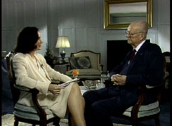
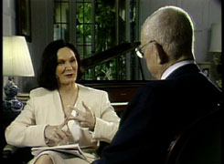

Newly released on DVD, Priscilla Petty's The Deming of America is offered at the introductory price of $95. Free U.S.P.S. shipping in the U.S. (Fed Ex and UPS at cost). Regular price, $110.
“The Deming of America is one of the best leadership and transformation videos ever produced!” says one consultant.
Our nation must work once again to come out of our crisis. We're challenged by global and local events. But the proven strategies in this DVD can help our country transform and innovate. Dr. W. Edwards Deming is shown at his unrehearsed best at his home, at a seminar, and in thought-provoking specially selected segments from an all-day interview with Priscilla. Brief remarks from Fortune 100 CEOs, who learned from Deming, show how he affected their thinking about their lives and companies as he worked with them to effect the transformation. Inspiring. Produced in 1991 by Petty Consulting Productions.
The Deming of America provides an overview of Dr. Deming's theory of management and was first seen on public television stations across the nation. The program shows Deming the man, focuses on his ideas, makes his message easy to understand, and shows how corporate and military leaders are using his concepts. Most people, after viewing the video, know that Dr. Deming's message is valid -- not because of how persuasive he is -- but because his message makes so much sense and, once understood, seems intuitive.
The Deming of America is 57 minutes long and features highlights with Dr. Deming, gleaned from an all-day, unscripted, unrehearsed interview with Priscilla Petty plus visits with him in his home. Also featured are:
Highlights of interviews with government, corporate and Navy leadership:
● Wiliam E. Brock, then Secretary of Labor and former U.S. Senator
● David Kearns, then Chairman of Xerox
● John Pepper, then President of Procter & Gamble
● Donald Petersen, retired Chairman and CEO of Ford
● Brian Rowe, then Senior VP, Head of GE Aircraft Engines
● Robert Stempel, then Chairman and CEO of General Motors
● J. Daniel Howard, then Under Secretary of the Navy
● Admiral Jerry Johnson, then Vice Chief of Naval Operations
Directors of Quality at Ford, General Motors and Procter & Gamble
Others who knew Deming
Other
● Deming at his home in Washington, D.C.; in his basement office; in his garden
● Deming at one of his seminars
● Deming at Dulles airport
● Historical photos of Deming in Japan
The Deming of America video program is the result of more than two years of effort by Priscilla Petty and her organization. Prior to meeting Dr. Deming, Ms. Petty had written a weekly syndicated newspaper column focusing on management techniques and improving personal effectiveness at work for about ten years. The Vice Chairman of Procter and Gamble insisted that she meet Dr. Deming because of the impact Dr. Deming had had on his company and arranged for the meeting. Shortly thereafter, Ms. Petty met with Dr. Deming in his Washington home, accompanied and introduced by Procter and Gamble's Director of Quality. Ms. Petty immediately recognized the profound importance of Dr. Deming's message and accepted Dr. Deming's invitation to remain in Washington at his home and accompany him to New York in a few days while he consulted with companies, taught his course at NYC and lectured at Columbia. Ms. Petty's vision for the public television special gradually evolved over the next several months as she accompanied Dr. Deming on numerous business consulting trips and to his four day seminars. She not only saw his genius at work as he privately consulted with numerous corporate leaders and during the seminars, she had countless hours of private discussions about his theories and philosophies. She was continually asking questions and listening, learning, while they traveled on planes, ate meals, and at the end of each day. After about eight months, Ms. Petty shared her vision with Dr. Deming and he agreed to cooperate. Then the work began.